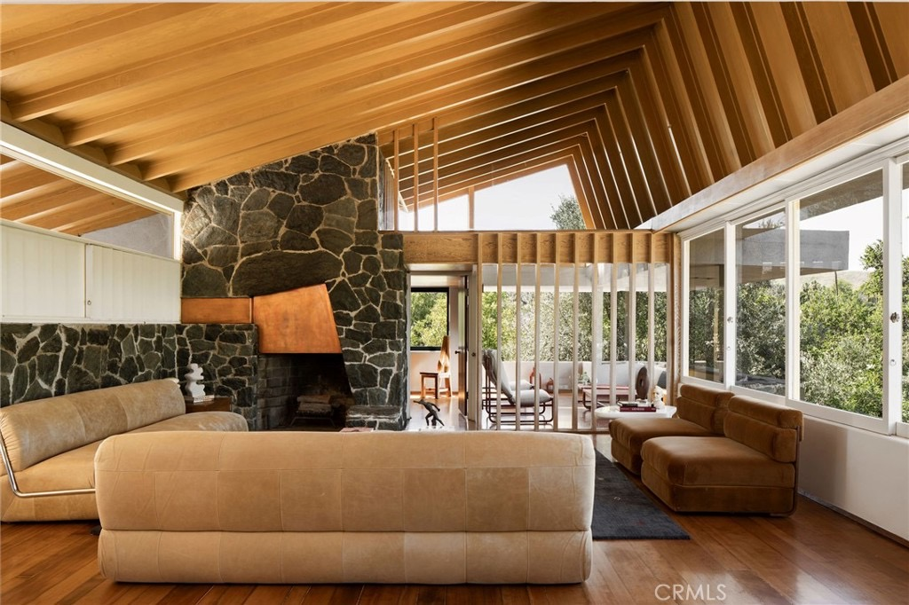
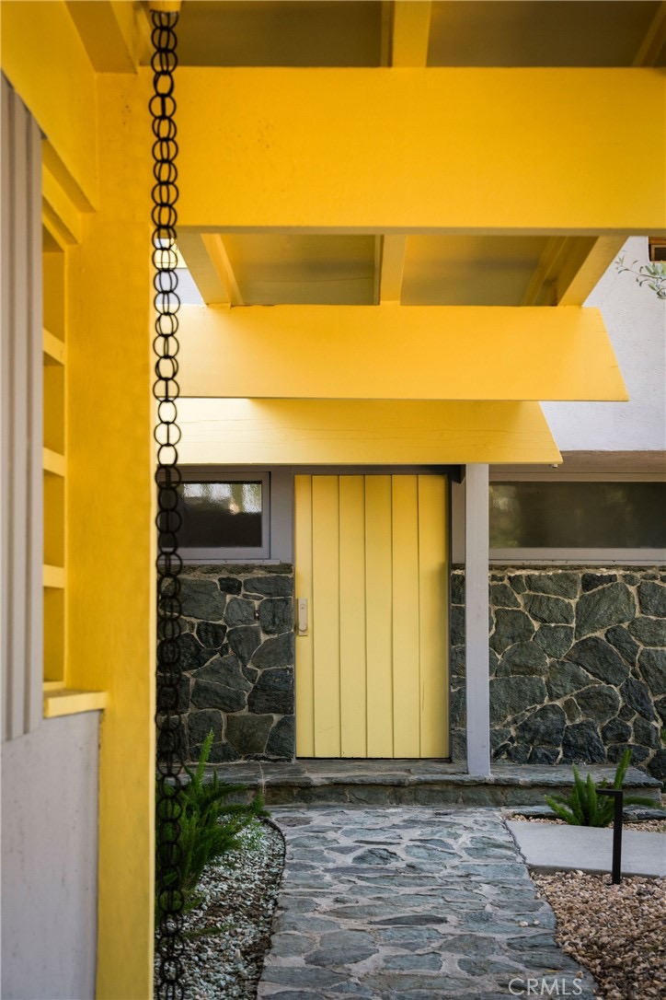
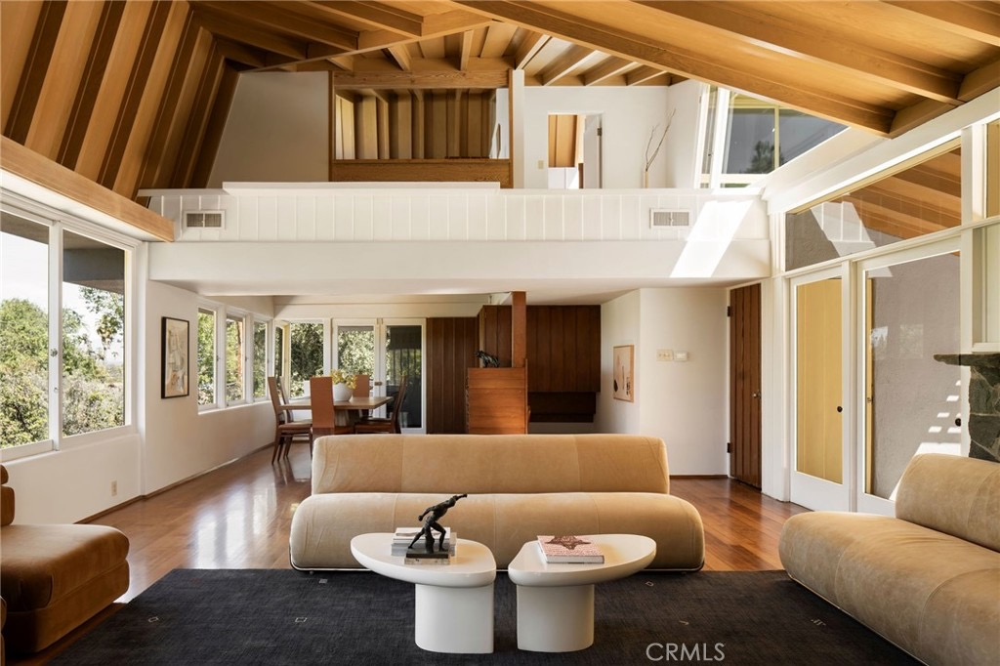

Obsession No. 010
Obsession No. 010Woodland Hills
19950
Collier St
A soaring wood-beamed ceiling over a wall of hand-stacked stone and a floating copper fireplace hood, and it's R.M. Schindler's largest known residential project.
Why it made the edit
“A fireplace made of hand-stacked stone holds a floating copper hood that reads more like sculpture than fixture.”
This one stopped me the second I saw the ceiling. Angled wood beams climb two stories to a wall of clerestory glass, and underneath them a fireplace made of hand-stacked stone holds a floating copper hood that reads more like sculpture than fixture.
It turns out there's a real reason it feels this considered: this is the Van Dekker House, R.M. Schindler's largest known residential project, built in 1940 and now a Los Angeles Historic-Cultural Monument.
The restoration honored every bit of that, the beams, the stone, the glass, while quietly adding what a house like this actually needs now, an updated kitchen, a primary suite with its own gym, a billiard room with a wine cellar, and a salt-water pool tucked into almost half an acre of grounds behind a gate.
Even the small stuff got the same care, there's a black iron rain chain at the front door doing the job of a downspout, the kind of detail you only notice because someone clearly wanted you to.
Houses like this don't come up often, and I'd love to walk you through it.



Want to see it in person?
Curious about this one?
Let’s talk.
Listed by Benjamin Kahle, Compass, and Desiree Zuckerman, Rodeo Realty. House of Zonshine does not represent this listing. Property details are from listing information and public sources and should be independently verified.